Paper identity & coverageمشخصات و پوشش مقاله
Xiao Du, Fengji Luo, Juntao Hu, Wei Zhou, Junhao Wen. Applied Energy 415 (2026), 127976. Available online 24 April 2026. DOI: 10.1016/j.apenergy.2026.127976.شیائو دو و همکاران؛ Applied Energy، جلد ۴۱۵، سال ۲۰۲۶، شماره 127976. انتشار آنلاین: ۲۴ آوریل ۲۰۲۶. Source · PDF p. 1
Coverage: main text and appendices A–E; all 9 figures; source views for all 14 tables; full source-page viewer and bibliography. Summaries are selective; original pages retain exact equations, prompts, code, and complete numerical tables. Figures are reproduced locally for this research report.پوشش: متن اصلی و پیوستهای A تا E، هر ۹ شکل، منبع هر ۱۴ جدول، نمایش تمام صفحات و کتابنامه. خلاصهها گزینشیاند؛ معادلات، پرامپتها، کد و دادههای کامل جدولها در صفحات اصلی حفظ شدهاند. Source · PDF p. 19
Problem, questions & hypothesesمسئله، پرسشها و فرضیهها
The stated problem is translating evolving natural-language preferences into executable DRL objectives without manual reward engineering. The paper motivates static rewards/states and slow, history-based adaptation as gaps.مسئله بیانشده، تبدیل ترجیحات متغیر زبان طبیعی به اهداف اجرایی یادگیری تقویتی بدون مهندسی دستی پاداش است. پاداش و حالت ثابت و انطباق کند مبتنی بر سابقه از شکافهای مطرحشدهاند. Source · PDF p. 2
No numbered hypothesis set is explicitly stated. Section 6 organizes the evaluation around preference alignment, iterative mechanism/agent contributions, robustness, and generality. Section 6.5 explicitly asks whether iterative refinement justifies its complexity.مجموعه فرضیه شمارهگذاریشده صریح ارائه نشده است. ارزیابی بخش ۶ بر همراستایی با ترجیحات، نقش تکرار و عاملها، استحکام و تعمیم متمرکز است. بخش ۶٫۵ میپرسد آیا بهبود تکراری پیچیدگی خود را توجیه میکند. Source · PDF p. 11
Method & implementation detailsروش و جزئیات پیادهسازی
The preference-driven MDP generates a coordinated pair: state modifier Mₚ and reward Rₚ. The physical scenario controls AC and BESS; PV and the grid supply energy, while other appliances form uncontrollable baseline load. Eqs. (1)–(4) define objectives and the preference mapping; Eqs. (5)–(10) define physical/stochastic models.در MDP مبتنی بر ترجیحات، اصلاحگر حالت Mₚ و پاداش Rₚ بهصورت هماهنگ تولید میشوند. کنترل شامل تهویه و باتری است؛ پنل خورشیدی و شبکه انرژی را تأمین میکنند و سایر وسایل بار پایهاند. معادلات ۱ تا ۴ اهداف و نگاشت ترجیح و معادلات ۵ تا ۱۰ مدلهای فیزیکی و تصادفی را تعریف میکنند. Source · PDF p. 3
Code Generation creates n candidate reward/state pairs. Result Analysis inspects KPIs and trajectories and supplies corrective feedback. Optimal Performance Search selects the next warm-start and final policy. Memory retrieval uses the latest m=3 iterations; trajectories are withheld from Code Generation and supplied to Result Analysis. Algorithm 1 describes the nested loop.عامل تولید کد n جفت پاداش/حالت میسازد؛ عامل تحلیل، شاخصها و مسیرها را بررسی و بازخورد اصلاحی میدهد؛ عامل جستوجوی عملکرد، شروع گرم و سیاست نهایی را انتخاب میکند. حافظه سه تکرار اخیر را بازیابی میکند؛ مسیرها برای تحلیل نتایج ارسال میشوند و از ورودی تولید کد حذف میشوند. الگوریتم ۱ حلقه تودرتو را شرح میدهد. Source · PDF p. 7
SAC uses actor–critic MLP dimensions [256,512,64,512,256], ReLU, Adam 3×10⁻⁴, discount 0.99, Polyak 0.005, automatic entropy tuning, batch 256, replay capacity 10⁶. DeepSeek V3 (671B) uses temperature 0.7 for generation and 0 for evaluation parsing. Platform: Ubuntu 20.04, Python 3.10, PyTorch 2.0, i7-14600K, RTX 4090.شبکههای SAC دارای ابعاد [256,512,64,512,256] با ReLU، Adam با نرخ 3×10⁻⁴، تنزیل ۰٫۹۹، ضریب Polyak برابر ۰٫۰۰۵، تنظیم خودکار آنتروپی، دسته ۲۵۶ و حافظه 10⁶ هستند. دمای DeepSeek V3 برای تولید ۰٫۷ و برای ارزیابی صفر است. بستر اجرا Ubuntu 20.04، Python 3.10، PyTorch 2.0 و RTX 4090 گزارش شده است. Source · PDF p. 8
Appendices C–D provide prompts and reference code. Appendix E requires BaseReward/BaseStateModifier interfaces, two Python code blocks, module/class checks, five random-action runtime tests, up to 50 generation attempts per sample, and documentation of 33 observation features. These are reported code-validation measures.پیوستهای C و D پرامپت و کد مرجع را ارائه میکنند. پیوست E شامل رابط کلاسها، دو بلوک کد، بررسی ماژول و کلاس، پنج گام تصادفی آزمون اجرا، حداکثر ۵۰ تلاش تولید برای هر نمونه و مستندسازی ۳۳ ویژگی مشاهده است. این موارد اقدامات اعتبارسنجی کد گزارششدهاند. Source · PDF p. 19
Experiments, data & evaluationآزمایشها، دادهها و ارزیابی
Training, validation, and test days are disjoint random subsets. Outer-loop feedback uses validation episodes; test days are withheld. Results average 10 independent seeds per preference. Each one-day episode has 288 five-minute steps; default search uses 5 iterations × 5 candidates × 90 training episodes.روزهای آموزش، اعتبارسنجی و آزمون به زیرمجموعههای تصادفی مجزا تقسیم شدهاند. بازخورد حلقه بیرونی از اعتبارسنجی میآید و آزمون کنار گذاشته میشود. نتایج میانگین ۱۰ بذر مستقل برای هر ترجیحاند. هر روز ۲۸۸ گام پنجدقیقهای و تنظیم پیشفرض ۵ تکرار، ۵ نامزد و ۹۰ اپیزود آموزش دارد. Source · PDF p. 8
Eight preferences: P1 cost, P2 emissions, P3 comfort; P4 no battery charging while home; P5 AC only when home at night; P6 discharge only at peak tariff; P7 conditional AC suppression with cost-saving preference; P8 no particular preference.هشت ترجیح: هزینه، انتشار، آسایش؛ منع شارژ باتری هنگام حضور؛ تهویه فقط هنگام حضور در شب؛ تخلیه فقط در تعرفه اوج؛ مهار شرطی تهویه همراه صرفهجویی؛ و حالت بدون ترجیح ویژه. Source · PDF p. 4
Data: Pecan Street apartment #3938, San Diego, 2016, 120 summer days; NOAA Trinidad Head weather; CityLearn v2 tariff and carbon profiles; stochastic occupancy. Table 13 reports five-minute downsampling and weather missingness of 0.32% solar / 5.72% temperature, filled backward then forward.دادهها شامل آپارتمان 3938 از Pecan Street در سندیگو، ۱۲۰ روز تابستان ۲۰۱۶، آبوهوای Trinidad Head، تعرفه و شدت کربن CityLearn v2 و حضور تصادفی است. جدول ۱۳ تجمیع به پنج دقیقه و داده گمشده خورشید ۰٫۳۲٪ و دما ۵٫۷۲٪ با پرکردن پسرو سپس پیشرو را گزارش میکند. Source · PDF p. 16
WIR is the weighted relative KPI improvement against fixed D1 reference KPIs (Eq. 18); it is reported for macro preferences. RCR measures compliance with micro-rule predicates (Eq. 19). The evaluation parser produces canonical weights/rules at temperature 0. Failure rate counts runs with invalid policies, device violations, degenerate behavior, or divergence.WIR بهبود نسبی وزندار شاخصها نسبت به مرجع ثابت D1 است و برای ترجیحات کلان گزارش میشود. RCR رعایت گزارههای قواعد خرد را میسنجد. پارسر ارزیابی وزنها و قواعد معیار را با دمای صفر تولید میکند. نرخ شکست شامل سیاست نامعتبر، نقض قیود تجهیز، رفتار منحط یا واگرایی است. Source · PDF p. 9
Compared baselines & ablationsخطمبناها و حذف مؤلفهها
| ID | Definitionتعریف |
|---|---|
| D1 | Fixed-reward DRLیادگیری تقویتی با پاداش ثابت |
| D2 | Oracle macro weightsوزنهای کلان اوراکل |
| D3 | Oracle weights + handcrafted micro-rule penaltiesوزنهای اوراکل و جریمه قواعد خرد دستی |
| H1 | One-shot static preference parsingتفسیر یکمرحلهای ترجیحات |
| H2 | LLM reward generation each training episode; no dedicated analysis agent [31]تولید پاداش در هر اپیزود، بدون عامل تحلیل مستقل [31] |
| H3 | Per-timestep LLM action filtering of the D1 policy [29]فیلتر کنش سیاست D1 در هر گام با مدل زبانی [29] |
Ablations remove Result Analysis feedback or Optimal Performance Search warm-start. Candidate count is varied from 1 to 9; backend algorithms include SAC, TD3, PPO, DDPG, MASAC, and MADDPG. Language/model tests include English, Chinese, Spanish and DeepSeek V3, GPT-4, Claude Sonnet 4.0, LLaMA-3 70B/8B.در حذف مؤلفه، بازخورد تحلیل یا شروع گرم جستوجوی عملکرد حذف میشود. شمار نامزدها از ۱ تا ۹ تغییر میکند؛ الگوریتمهای SAC، TD3، PPO، DDPG، MASAC و MADDPG و سه زبان انگلیسی، چینی و اسپانیایی با چند مدل زبانی آزموده شدهاند. Source · PDF p. 15
Reported resultsنتایج گزارششده
Main aggregate: WIR 0.13, RCR 0.84; failure rate 5.4% versus static parsing 34.3%. Feedback removal gives 16.3% failure and warm-start removal 8.1%. These are paper-reported simulation results, not independently reproduced measurements.نتیجه تجمیعی اصلی: WIR برابر ۰٫۱۳، RCR برابر ۰٫۸۴ و شکست ۵٫۴٪ در برابر ۳۴٫۳٪ تفسیر ایستا. حذف بازخورد شکست را به ۱۶٫۳٪ و حذف شروع گرم به ۸٫۱٪ میرساند. اینها نتایج شبیهسازی گزارششده مقالهاند و مستقل بازتولید نشدهاند. Source · PDF p. 13
Table 6: LA-UPAHEM trains 2250 episodes, makes 15 LLM calls, consumes 57.30K tokens, and makes zero deployment-time LLM calls. H1 uses 2.15K tokens; H2 296.10K; H3 5486.40K over the stated 15-day cycle. Authors report a complete adaptation cycle of approximately 2.5–3.5 hours on their platform.جدول ۶: روش پیشنهادی ۲۲۵۰ اپیزود، ۱۵ فراخوانی مدل و 57.30K توکن دارد و هنگام استقرار مدل زبانی را فراخوانی نمیکند. H1 برابر 2.15K، H2 برابر 296.10K و H3 برابر 5486.40K توکن در چرخه ۱۵روزه گزارششده مصرف میکنند. زمان انطباق کامل حدود ۲٫۵ تا ۳٫۵ ساعت است. Source · PDF p. 13
Robustness tests add Gaussian exogenous noise β={0,.05,.10,.15}, perturb dominant evaluation weights ±20%, and test paraphrases. The paper reports retained top ranking across nine preference/weight combinations. Under P3, discomfort spans 1.57–2.01 across tested noise levels.آزمون استحکام شامل نویز گاوسی با β برابر صفر، ۰٫۰۵، ۰٫۱۰ و ۰٫۱۵، تغییر ۲۰٪ وزن غالب و بازنویسی ترجیحات است. مقاله حفظ رتبه نخست در نه ترکیب ترجیح/وزن و دامنه ناراحتی ۱٫۵۷ تا ۲٫۰۱ برای P3 را گزارش میکند. Source · PDF p. 13
All figures & extracted evidenceهمه شکلها و شواهد استخراجشده
Fig. 1 / شکل 1
Mechanism & workflowسازوکار و گردش کار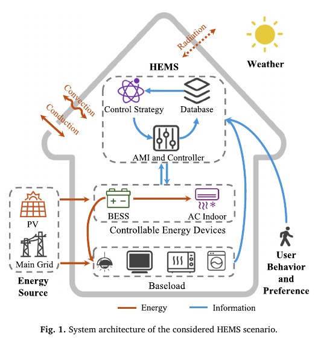
How to read this figureراهنمای خواندن شکل
Trace the inputs, processing stages and outputs, then look for feedback or validation paths. Use the accompanying explanation to distinguish the proposed design from components actually tested in the paper.ورودی، مرحله پردازش و خروجی را دنبال و مسیر بازخورد یا اعتبارسنجی را پیدا کنید. با توضیح همراه، طراحی پیشنهادی را از مؤلفه واقعاً آزمودهشده جدا کنید.
Reader guidance · not an additional author claimراهنمای مطالعه · ادعای اضافی نویسنده نیستWhat this figure showsاین شکل چه نشان میدهد؟
Energy flows connect PV/grid to BESS, AC, and baseline loads; information links connect user preferences, AMI/controller, database, and policy. No quantitative experimental series is encoded.جریان انرژی میان خورشید/شبکه، باتری، تهویه و بار پایه و جریان اطلاعات میان کاربر، کنترلگر، پایگاه داده و سیاست نمایش داده شده است. این شکل سری داده آزمایشی عددی ندارد. Source · PDF p. 3
Fig. 2 / شکل 2
Mechanism & workflowسازوکار و گردش کار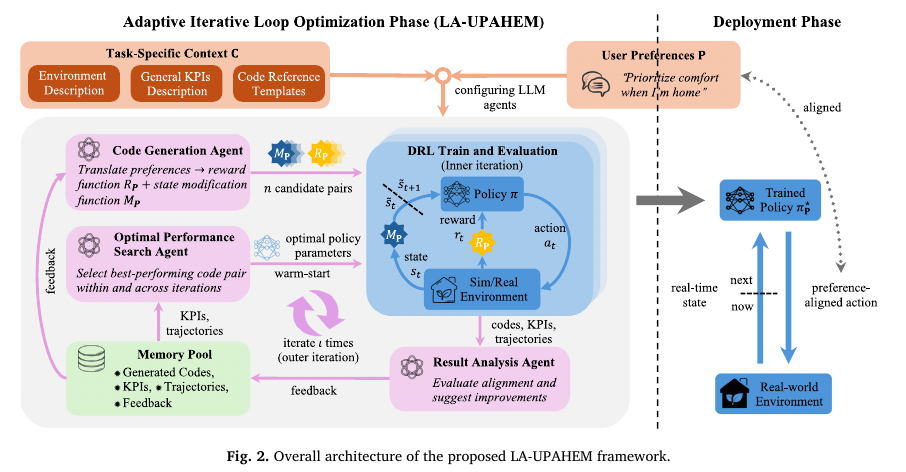
How to read this figureراهنمای خواندن شکل
Trace the inputs, processing stages and outputs, then look for feedback or validation paths. Use the accompanying explanation to distinguish the proposed design from components actually tested in the paper.ورودی، مرحله پردازش و خروجی را دنبال و مسیر بازخورد یا اعتبارسنجی را پیدا کنید. با توضیح همراه، طراحی پیشنهادی را از مؤلفه واقعاً آزمودهشده جدا کنید.
Reader guidance · not an additional author claimراهنمای مطالعه · ادعای اضافی نویسنده نیستWhat this figure showsاین شکل چه نشان میدهد؟
The diagram separates offline candidate generation, inner DRL training/evaluation, analysis, memory, and warm-start selection from deployed policy execution. n and iteration count are symbolic here; defaults are specified in §6.1.شکل تولید نامزد، آموزش/ارزیابی، تحلیل، حافظه و شروع گرم آفلاین را از اجرای سیاست جدا میکند. شمار نامزد و تکرار در این نمودار نمادیناند و مقدار پیشفرض در بخش ۶٫۱ آمده است. Source · PDF p. 6
Fig. 3 / شکل 3
Comparison & resultsمقایسه و نتایج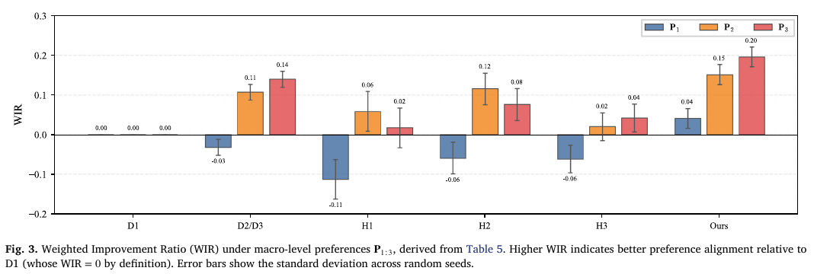
How to read this figureراهنمای خواندن شکل
Check the axes, units, panel labels and the caption’s definition of better performance. Compare methods under the stated conditions; keep uncertainty, tradeoffs and normalization separate from headline gains.محور، واحد، پنل و تعریف عملکرد بهتر در عنوان را بررسی کنید. روشها را در شرایط بیانشده مقایسه و عدمقطعیت، مصالحه و نرمالسازی را از بهبود شاخص اصلی جدا نگه دارید.
Reader guidance · not an additional author claimراهنمای مطالعه · ادعای اضافی نویسنده نیستWhat this figure showsاین شکل چه نشان میدهد؟
Printed bar labels, ordered P1/P2/P3: D1 0/0/0; D2/D3 −.03/.11/.14; H1 −.11/.06/.02; H2 −.06/.12/.08; H3 −.06/.02/.04; Ours .04/.15/.20. Error-bar magnitudes are not numerically labeled; none are estimated.برچسبهای چاپشده به ترتیب P1/P2/P3: روش پیشنهادی ۰٫۰۴/۰٫۱۵/۰٫۲۰ است؛ مقادیر همه روشها در متن انگلیسی آمدهاند. اندازه میلههای خطا برآورد نشده است. Source · PDF p. 10
Fig. 4 / شکل 4
Comparison & resultsمقایسه و نتایج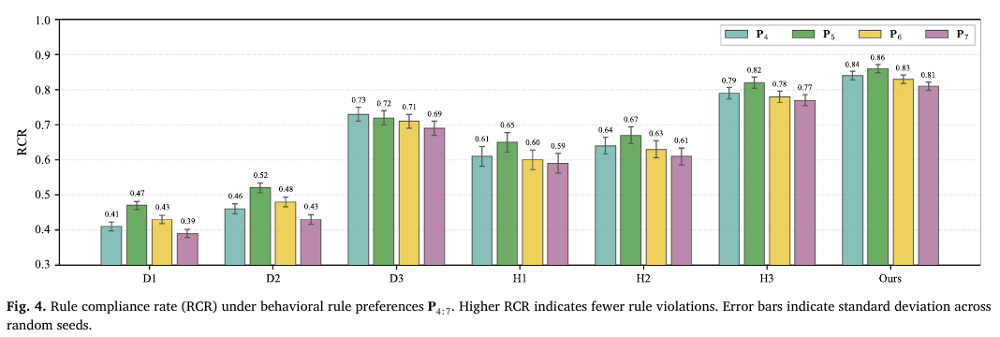
How to read this figureراهنمای خواندن شکل
Check the axes, units, panel labels and the caption’s definition of better performance. Compare methods under the stated conditions; keep uncertainty, tradeoffs and normalization separate from headline gains.محور، واحد، پنل و تعریف عملکرد بهتر در عنوان را بررسی کنید. روشها را در شرایط بیانشده مقایسه و عدمقطعیت، مصالحه و نرمالسازی را از بهبود شاخص اصلی جدا نگه دارید.
Reader guidance · not an additional author claimراهنمای مطالعه · ادعای اضافی نویسنده نیستWhat this figure showsاین شکل چه نشان میدهد؟
Printed labels P4/P5/P6/P7: D1 .41/.47/.43/.39; D2 .46/.52/.48/.43; D3 .73/.72/.71/.69; H1 .61/.65/.60/.59; H2 .64/.67/.63/.61; H3 .79/.82/.78/.77; Ours .84/.86/.83/.81. Error magnitudes are not estimated.برچسبهای چاپشده روش پیشنهادی به ترتیب P4 تا P7 برابر ۰٫۸۴، ۰٫۸۶، ۰٫۸۳ و ۰٫۸۱ است. سایر روشها در متن انگلیسی ثبت شدهاند. مقدار خطا از نمودار تخمین زده نشده است. Source · PDF p. 10
Fig. 5 / شکل 5
Time & behaviorزمان و رفتار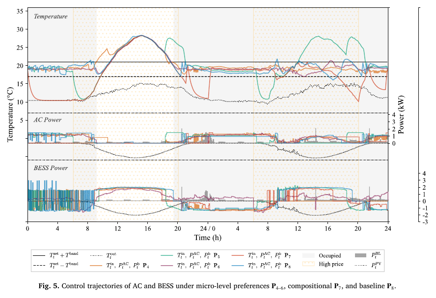
How to read this figureراهنمای خواندن شکل
Read the time window and units before comparing traces. Match each curve to its legend and the same operating conditions; unlabeled samples are not numerical measurements extracted by this report.پیش از مقایسه مسیرها، بازه زمان و واحدها را بخوانید. هر منحنی را به راهنما و شرایط یکسان وصل کنید؛ نمونه بدون برچسب، اندازهگیری عددی استخراجشده در این گزارش نیست.
Reader guidance · not an additional author claimراهنمای مطالعه · ادعای اضافی نویسنده نیستWhat this figure showsاین شکل چه نشان میدهد؟
Panels display indoor/outdoor temperature, AC power, and BESS power over two daily cycles, with occupancy and high-price overlays. Curves have no printed sample values; no trajectories are digitized. §6.4 explains preference-dependent suppression of charging and AC operation.دما، توان تهویه و باتری در دو چرخه روزانه همراه حضور و زمان قیمت بالا نشان داده شدهاند. نمونههای منحنی برچسب عددی ندارند؛ بنابراین دادهبرداری تخمینی انجام نشده است. بخش ۶٫۴ رفتار وابسته به ترجیحات را توضیح میدهد. Source · PDF p. 10
Fig. 6 / شکل 6
Comparison & resultsمقایسه و نتایج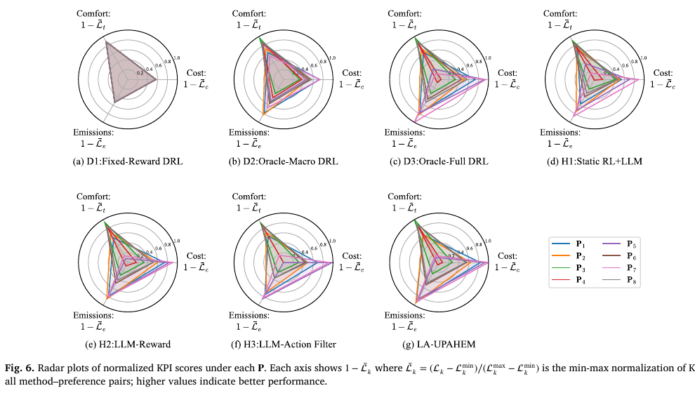
How to read this figureراهنمای خواندن شکل
Check the axes, units, panel labels and the caption’s definition of better performance. Compare methods under the stated conditions; keep uncertainty, tradeoffs and normalization separate from headline gains.محور، واحد، پنل و تعریف عملکرد بهتر در عنوان را بررسی کنید. روشها را در شرایط بیانشده مقایسه و عدمقطعیت، مصالحه و نرمالسازی را از بهبود شاخص اصلی جدا نگه دارید.
Reader guidance · not an additional author claimراهنمای مطالعه · ادعای اضافی نویسنده نیستWhat this figure showsاین شکل چه نشان میدهد؟
Seven method panels compare cost, comfort, and emissions for P1–P8. Individual vertex values are not printed; source numerical KPIs are in Table 5. No vertex values are inferred.هفت پنل هزینه، آسایش و انتشار را برای هشت ترجیح مقایسه میکنند. رأسها عدد چاپشده ندارند؛ داده اصلی در جدول ۵ است و از تصویر تخمین زده نشده است. Source · PDF p. 12
Fig. 7 / شکل 7
Time & behaviorزمان و رفتار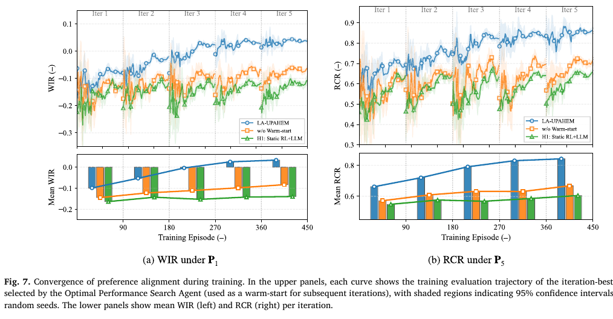
How to read this figureراهنمای خواندن شکل
Read the time window and units before comparing traces. Match each curve to its legend and the same operating conditions; unlabeled samples are not numerical measurements extracted by this report.پیش از مقایسه مسیرها، بازه زمان و واحدها را بخوانید. هر منحنی را به راهنما و شرایط یکسان وصل کنید؛ نمونه بدون برچسب، اندازهگیری عددی استخراجشده در این گزارش نیست.
Reader guidance · not an additional author claimراهنمای مطالعه · ادعای اضافی نویسنده نیستWhat this figure showsاین شکل چه نشان میدهد؟
Left: WIR for P1; right: RCR for P5, comparing full method, no warm-start, and static H1 over five iterations. No exact curve samples or confidence interval endpoints are printed. Authors describe diminishing returns after early iterations in §6.5.چپ WIR برای P1 و راست RCR برای P5 است. روش کامل، حذف شروع گرم و H1 در پنج تکرار مقایسه شدهاند. نمونه دقیق منحنی یا دو سر فاصله اطمینان چاپ نشده و تخمین زده نشده است. Source · PDF p. 12
Fig. 8 / شکل 8
Comparison & resultsمقایسه و نتایج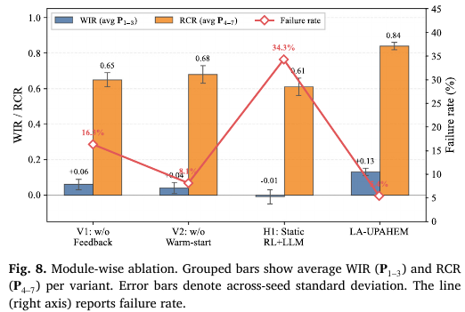
How to read this figureراهنمای خواندن شکل
Check the axes, units, panel labels and the caption’s definition of better performance. Compare methods under the stated conditions; keep uncertainty, tradeoffs and normalization separate from headline gains.محور، واحد، پنل و تعریف عملکرد بهتر در عنوان را بررسی کنید. روشها را در شرایط بیانشده مقایسه و عدمقطعیت، مصالحه و نرمالسازی را از بهبود شاخص اصلی جدا نگه دارید.
Reader guidance · not an additional author claimراهنمای مطالعه · ادعای اضافی نویسنده نیستWhat this figure showsاین شکل چه نشان میدهد؟
Printed labels (WIR/RCR/failure): no feedback .06/.65/16.3%; no warm-start .04/.68/8.1%; static H1 −.01/.61/34.3%; full .13/.84/5.4%.برچسبهای چاپشده WIR/RCR/شکست: بدون بازخورد ۰٫۰۶/۰٫۶۵/۱۶٫۳٪؛ بدون شروع گرم ۰٫۰۴/۰٫۶۸/۸٫۱٪؛ H1 برابر −۰٫۰۱/۰٫۶۱/۳۴٫۳٪؛ کامل ۰٫۱۳/۰٫۸۴/۵٫۴٪. Source · PDF p. 13
Fig. 9 / شکل 9
Comparison & resultsمقایسه و نتایج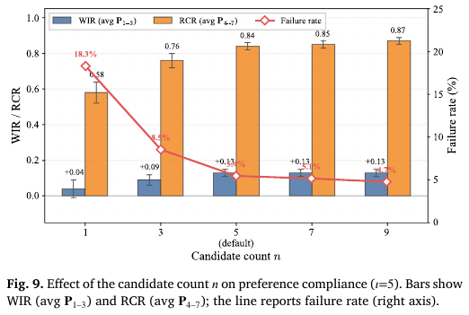
How to read this figureراهنمای خواندن شکل
Check the axes, units, panel labels and the caption’s definition of better performance. Compare methods under the stated conditions; keep uncertainty, tradeoffs and normalization separate from headline gains.محور، واحد، پنل و تعریف عملکرد بهتر در عنوان را بررسی کنید. روشها را در شرایط بیانشده مقایسه و عدمقطعیت، مصالحه و نرمالسازی را از بهبود شاخص اصلی جدا نگه دارید.
Reader guidance · not an additional author claimراهنمای مطالعه · ادعای اضافی نویسنده نیستWhat this figure showsاین شکل چه نشان میدهد؟
Printed labels n=1/3/5/7/9: WIR .04/.09/.13/.13/.13; RCR .58/.76/.84/.85/.87; failure 18.3/8.5/5.4/5.1/4.7%. Additional candidates increase compute; authors describe gains beyond n=5 as negligible.برای n برابر ۱/۳/۵/۷/۹: WIR برابر ۰٫۰۴/۰٫۰۹/۰٫۱۳/۰٫۱۳/۰٫۱۳؛ RCR برابر ۰٫۵۸/۰٫۷۶/۰٫۸۴/۰٫۸۵/۰٫۸۷؛ شکست ۱۸٫۳/۸٫۵/۵٫۴/۵٫۱/۴٫۷٪ است. نویسندگان سود بعد از پنج نامزد را ناچیز توصیف میکنند. Source · PDF p. 13
All tables & numerical source viewsتمام جدولها و منابع عددی
Every numbered table is indexed below. Open the source page for the complete original values, units, footnotes, and formatting; selected headline numbers appear above.همه جدولهای شمارهدار در زیر فهرست شدهاند. برای تمام مقادیر، واحدها و پانویسها صفحه اصلی را باز کنید؛ اعداد کلیدی در بالا آمدهاند.
Table 3 · Baseline access and iteration comparisonدسترسی و تکرار خطمبناها
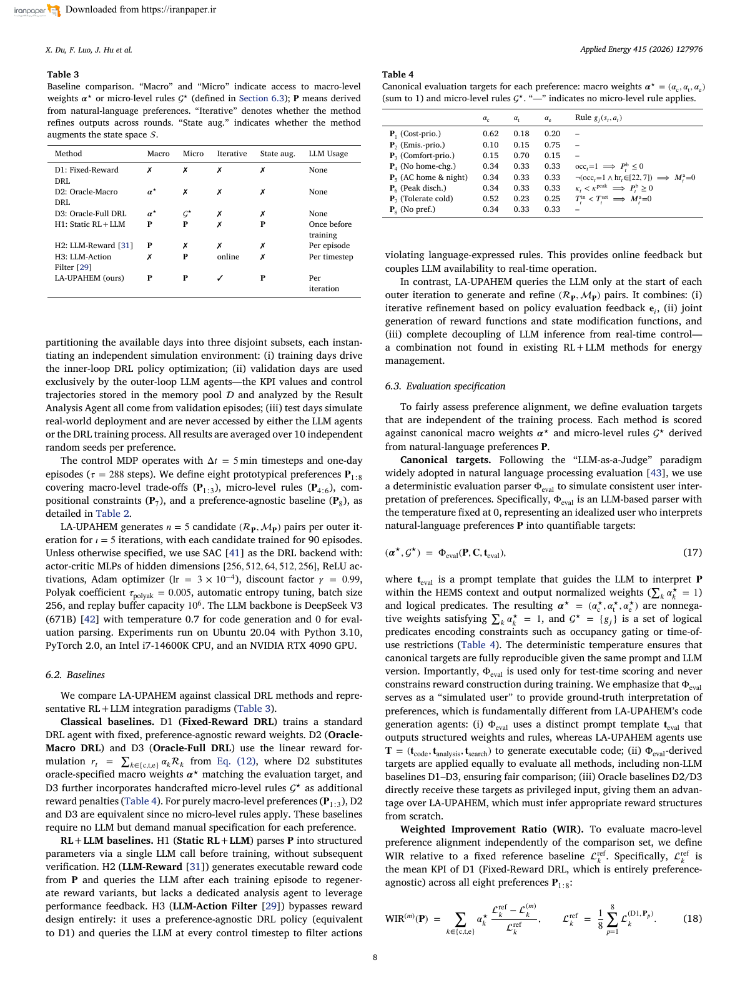
Table 3 · PDF p. 8Table 5 · Raw KPI mean ± standard deviationمیانگین و انحراف معیار شاخصها
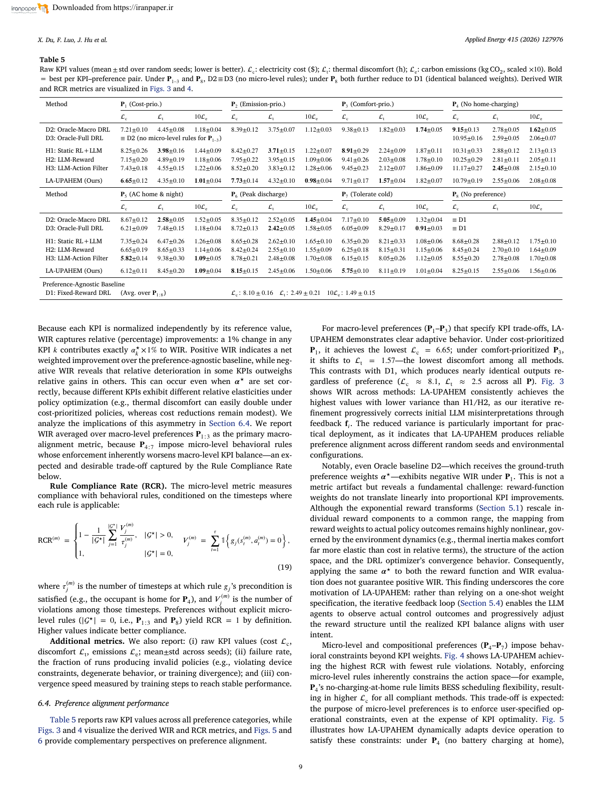
Table 5 · PDF p. 9Table 6 · Training and inference computational costهزینه محاسباتی آموزش و اجرا
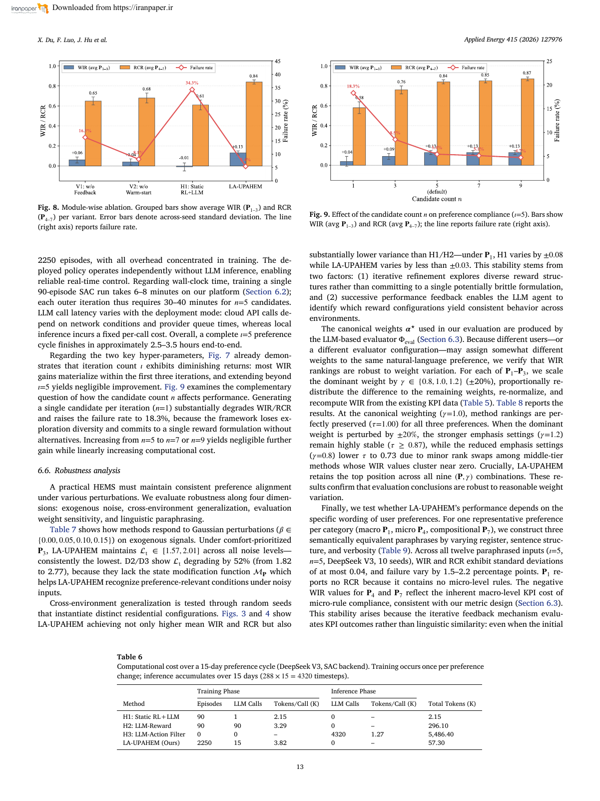
Table 6 · PDF p. 13Author-stated strengths, limits & future workنقاط قوت، محدودیتها و آینده از دید نویسندگان
Authors emphasize offline LLM use, inspectable reward/state code, feedback plus warm-start synergy, and compatibility across algorithms/models/languages. They acknowledge privacy exposure through preferences, household context, and memory sent to APIs, and discuss minimization, retention limits, anonymization, and local LLMs.نویسندگان کاربرد آفلاین مدل، کد قابل بازرسی، همافزایی بازخورد و شروع گرم و سازگاری الگوریتمی و زبانی را برجسته میکنند. افشای ترجیحات، مشخصات خانه و حافظه در API نیز مطرح و کاهش داده، محدودیت نگهداری، ناشناسسازی و مدل محلی پیشنهاد میشود. Source · PDF p. 7
The stated key limitation is episode-level adaptation requiring a new 2.5–3.5-hour cycle; abrupt intra-episode changes are outside scope. Future directions include policy libraries, online reward adaptation, multimodal preference cues, improved local small-model deployment, and community coordination. Data are available on request.محدودیت اصلی، انطباق در سطح اپیزود با چرخه جدید ۲٫۵ تا ۳٫۵ساعته است؛ تغییر ناگهانی درون اپیزود خارج از دامنه است. کتابخانه سیاست، تطبیق آنلاین پاداش، ورودی چندوجهی، مدل محلی کوچک و هماهنگی محله از مسیرهای آیندهاند. داده با درخواست قابل دریافت است. Source · PDF p. 15
Separately labeled critical analysisتحلیل انتقادی با برچسب مستقل
Transfer to our benchmark requires an adapted implementation: this study uses AC/BESS, a thermodynamic model, five-minute timesteps, and CityLearn v2 tariff/carbon data; our selected setup uses different equipment and hourly LSTM dynamics. Published scores cannot be compared directly without matched experiments.انتقال به معیار ما نیازمند پیادهسازی اقتباسی است: این مطالعه AC/BESS، مدل حرارتی و گام پنجدقیقهای دارد، در حالی که محیط منتخب ما تجهیزات و دینامیک LSTM ساعتی متفاوت دارد. مقایسه مستقیم امتیازهای منتشرشده بدون آزمایش همسان مناسب نیست. Source · PDF p. 16
Appendix E’s five-step runtime test and interface checks establish a limited code-validation procedure. They do not, by themselves, demonstrate a formal hard-safety guarantee over a complete episode. A separate safety specification is needed for our interventions.آزمون پنجگامی و کنترل رابط در پیوست E رویه محدود اعتبارسنجی کد را نشان میدهند و بهتنهایی تضمین رسمی ایمنی سخت در تمام اپیزود را اثبات نمیکنند. برای مداخلات پروژه ما مشخصات ایمنی مستقل لازم است. Source · PDF p. 19
The temperature-zero evaluation parser is an operational target generator. Its output should not be interpreted as independently measured resident preference truth; the authors explicitly model an idealized user. Weight sensitivity experiments partially examine this dependence.پارسر ارزیابی با دمای صفر، هدف عملیاتی تولید میکند. خروجی آن معادل حقیقت ترجیح اندازهگیریشده مستقل از ساکن نیست؛ نویسندگان آن را کاربر ایدهآل مینامند. آزمون حساسیت وزن بخشی از این وابستگی را بررسی میکند. Source · PDF p. 8
Original pages & implementation appendicesصفحات اصلی و پیوستهای پیادهسازی
Use the original pages to inspect equations, Table 5, code blocks, and full prompt text that PDF text extraction may omit. Appendix A/B: p.16; C: pp.16–18; D: p.18; E: pp.18–19.برای معادلات، جدول ۵، کد و پرامپتهایی که استخراج متن ممکن است از قلم بیندازد، صفحات اصلی را ببینید. پیوست A/B صفحه ۱۶؛ C صفحات ۱۶ تا ۱۸؛ D صفحه ۱۸؛ E صفحات ۱۸ و ۱۹.
PDF page 1 / صفحه 1
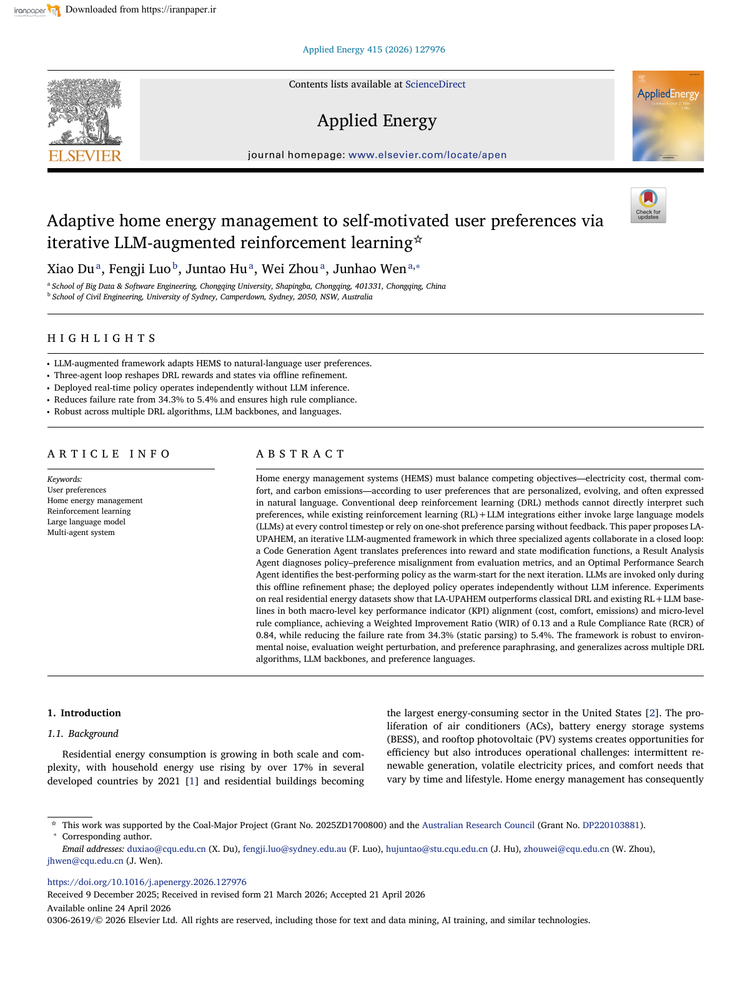
PDF page 2 / صفحه 2
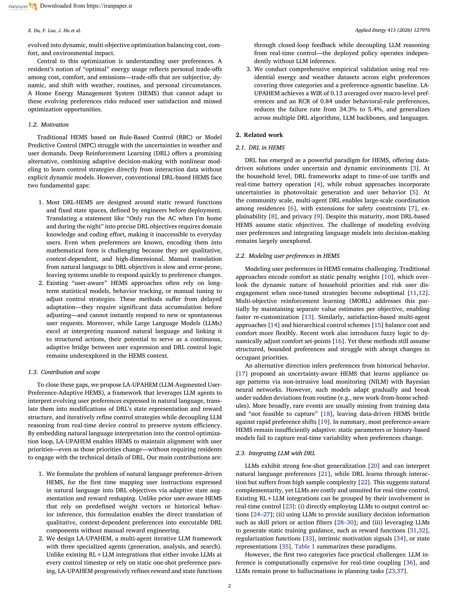
PDF page 5 / صفحه 5
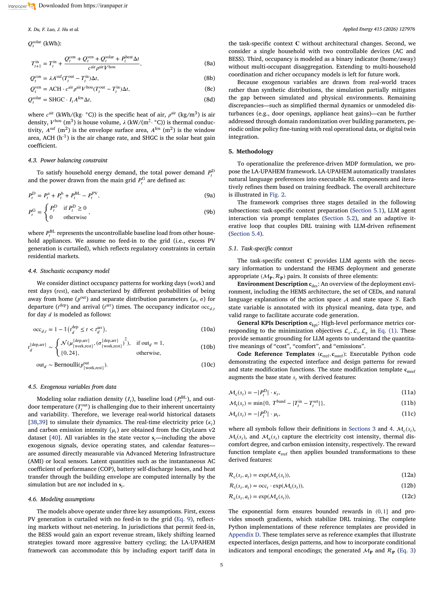
PDF page 6 / صفحه 6
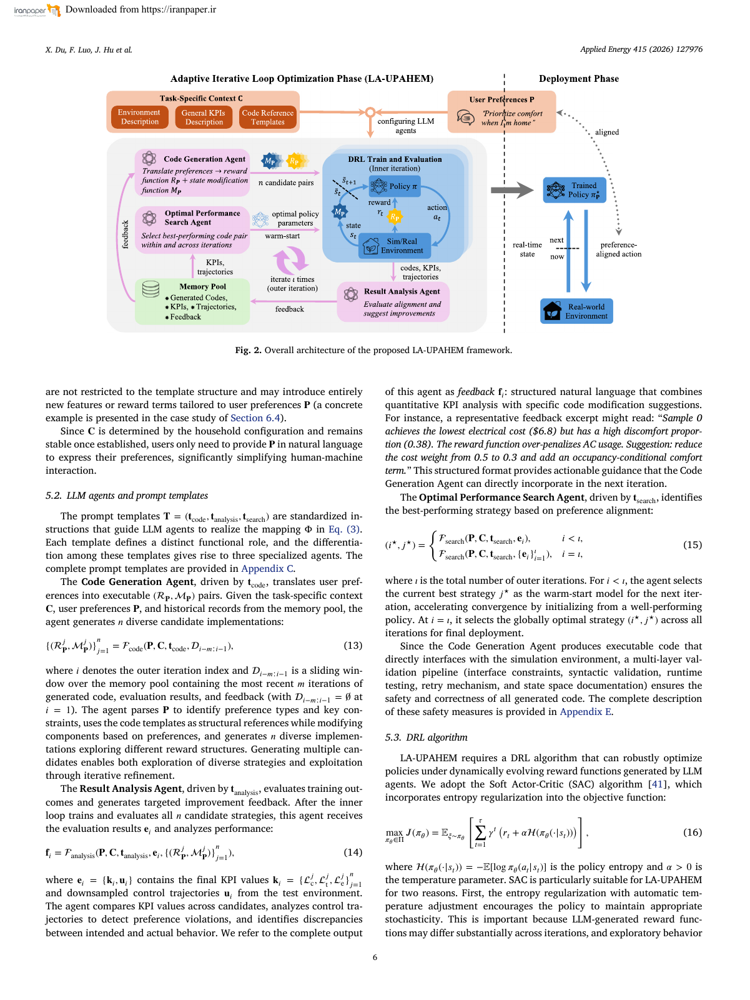
PDF page 7 / صفحه 7
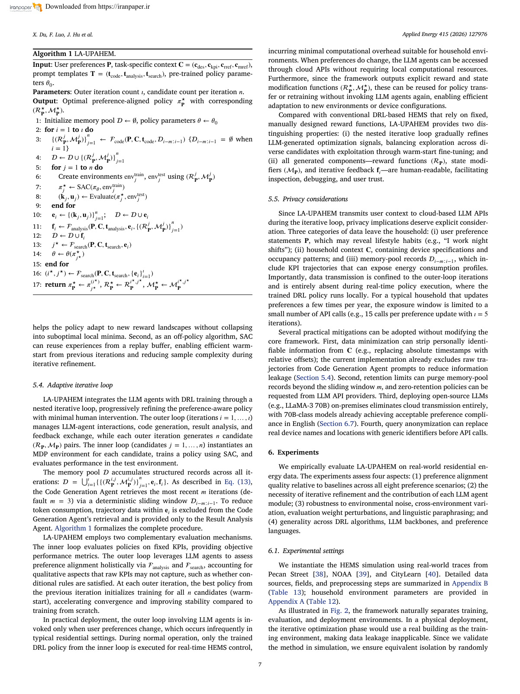
PDF page 10 / صفحه 10
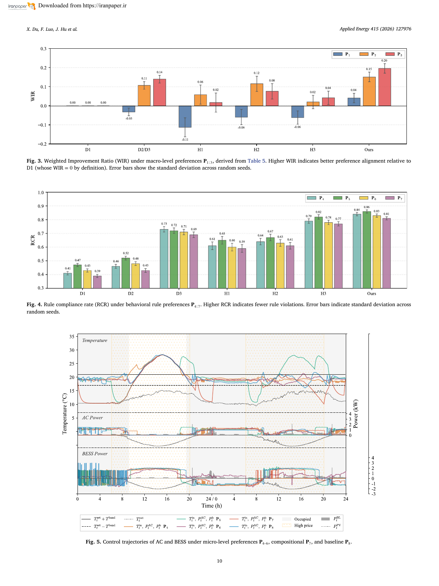
PDF page 11 / صفحه 11
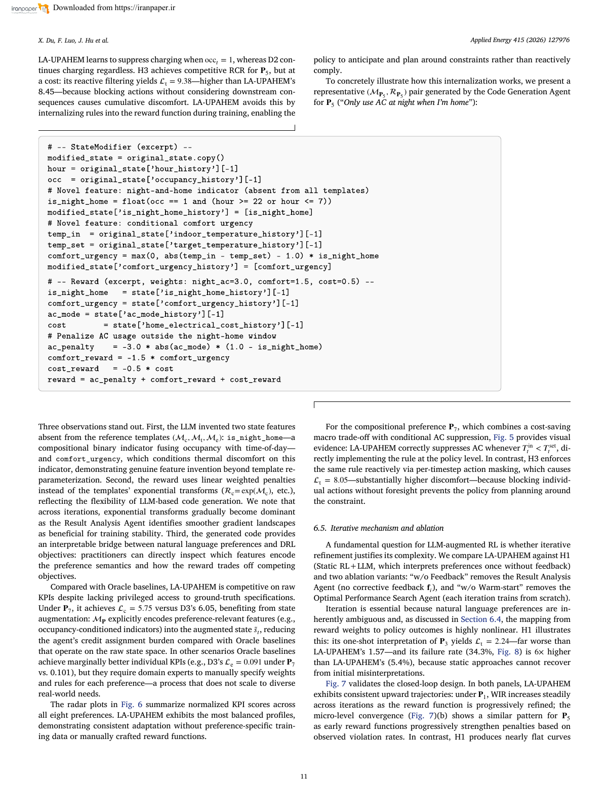
PDF page 12 / صفحه 12
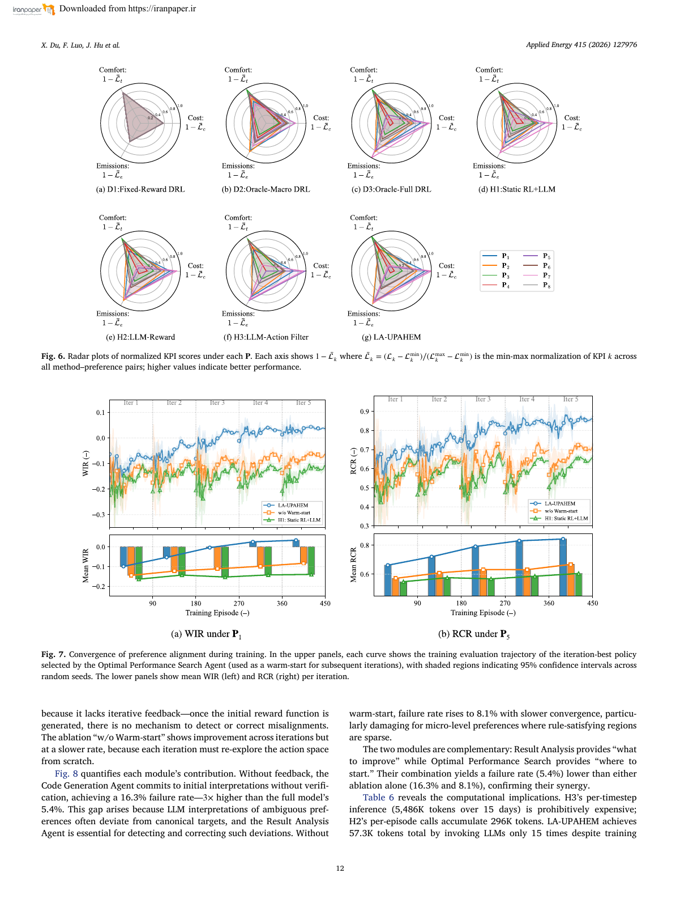
PDF page 18 / صفحه 18
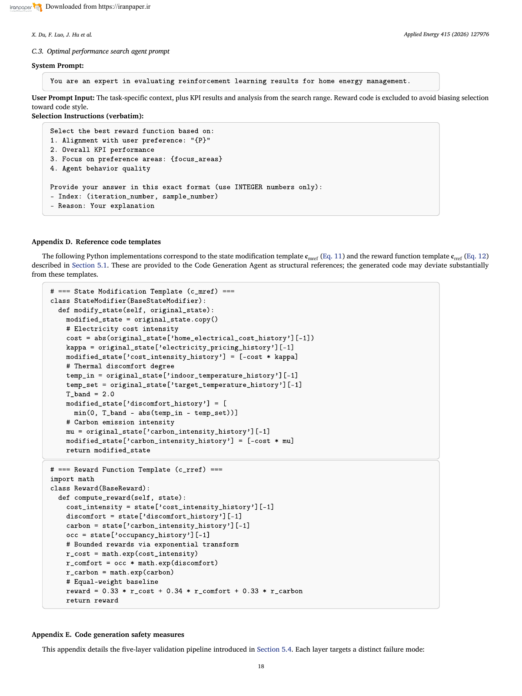
PDF page 19 / صفحه 19
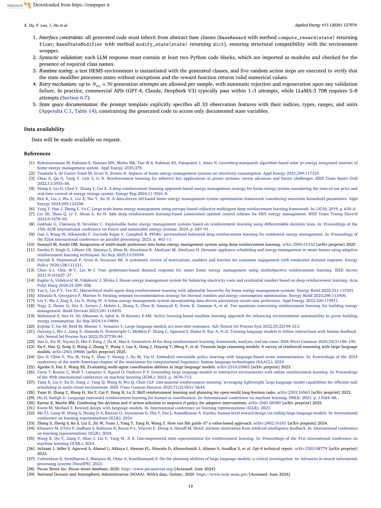
PDF page 20 / صفحه 20
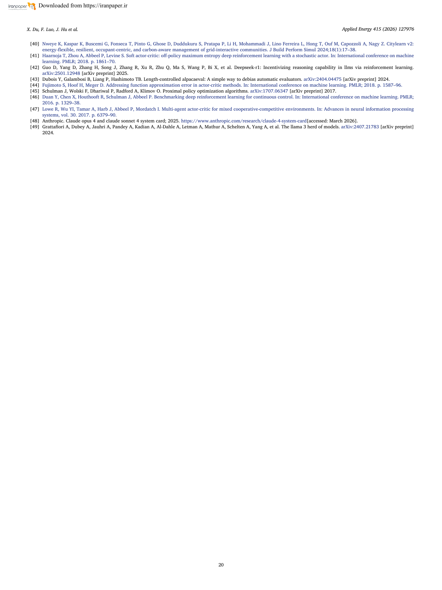
Role in our researchنقش مقاله در پژوهش ما
Why is it important to our research?چرا برای پژوهش ما مهم است؟
It is the project's original preference-adaptation reference and a concrete example of offline LLM reasoning separated from deployed control. It provides a measurable adaptation-time and preference-alignment comparison point.مرجع اولیه پروژه برای انطباق ترجیحات است و نمونه مشخص جداسازی استدلال آفلاین مدل زبانی از کنترل مستقر را ارائه میکند. زمان انطباق و همراستایی ترجیحات آن نقطه مقایسه قابل اندازهگیری است. Source · PDF p. 1Source · PDF p. 7Source · PDF p. 13
What does it contribute to our research?چه سهمی در پژوهش ما دارد؟
It supplies preference-to-reward/state contracts, generation–analysis–search roles, warm-start feedback, and WIR/RCR evaluation definitions. These support our preference and comparison specifications; the paper does not supply our five-family causal diagnosis or decision-oriented intervention policy.قرارداد تبدیل ترجیح به پاداش/حالت، نقشهای تولید–تحلیل–جستوجو، بازخورد شروع گرم و معیارهای WIR/RCR را فراهم میکند. اینها به مشخصات ترجیحات و مقایسه کمک میکنند؛ تشخیص علّی پنجخانوادهای و سیاست مداخله تصمیممحور پروژه ما در این مقاله ارائه نشدهاند. Source · PDF p. 6Source · PDF p. 7Source · PDF p. 8Source · PDF p. 9
How can we employ it?چگونه از آن استفاده کنیم؟
In P0 define the exact preference events and evaluation targets we retain. In P3 adapt its control/retraining loop only after matching device coverage, time resolution, state representation and training budget. Reuse its separation of validation feedback from final test days; report all adaptations from its five-minute AC/BESS model to our hourly Alameda environment.در P0 رویداد ترجیح و اهداف ارزیابی قابل استفاده را تعریف کنیم. در P3 فقط پس از همسانسازی تجهیزات، تفکیک زمانی، حالت و بودجه آموزش، حلقه کنترل/بازآموزی را اقتباس کنیم. جداسازی بازخورد اعتبارسنجی از آزمون نهایی حفظ و تغییرات مدل پنجدقیقهای AC/BESS به Alameda ساعتی مستند شود. Source · PDF p. 8Source · PDF p. 16
Should we implement it as a baseline?آیا باید آن را بهعنوان خطمبنا پیاده کنیم؟
Recommended as a conditional adapted preference-adaptation baseline, especially if we claim faster adaptation than iterative RL. It is not an exact reproduction in the selected environment. For the causal-recovery claim, diagnosis-free planning, rule-based diagnosis and causal ablations are more direct comparisons. Baseline scope and budget still require a research decision; DRL does not become the proposed core controller.برای ادعای انطباق سریعتر از RL تکراری، خطمبنای اقتباسی مشروط توصیه میشود. در محیط منتخب، بازتولید دقیق نیست. برای ادعای بازیابی علّی، برنامهریز بدون تشخیص، تشخیص قاعدهای و حذف مؤلفه علّی مقایسههای مستقیمتری هستند. دامنه و بودجه مقایسه هنوز تصمیم پژوهشی میخواهد؛ DRL کنترلگر اصلی پیشنهادی نمیشود. Source · PDF p. 8Source · PDF p. 13Source · PDF p. 15
References & source provenanceمنابع و منشأ فایل
Du et al. (2026). https://doi.org/10.1016/j.apenergy.2026.127976 Source · PDF p. 1
The bibliography below is transcribed from this paper, not a claim that its cited works were independently read. Original bibliography pages 19–20 remain authoritative for typography and any extraction errors.کتابنامه زیر از همین مقاله استخراج شده و به معنی مطالعه مستقل منابع آن نیست. صفحات ۱۹ و ۲۰ برای نگارش اصلی و خطاهای احتمالی استخراج مرجعاند.